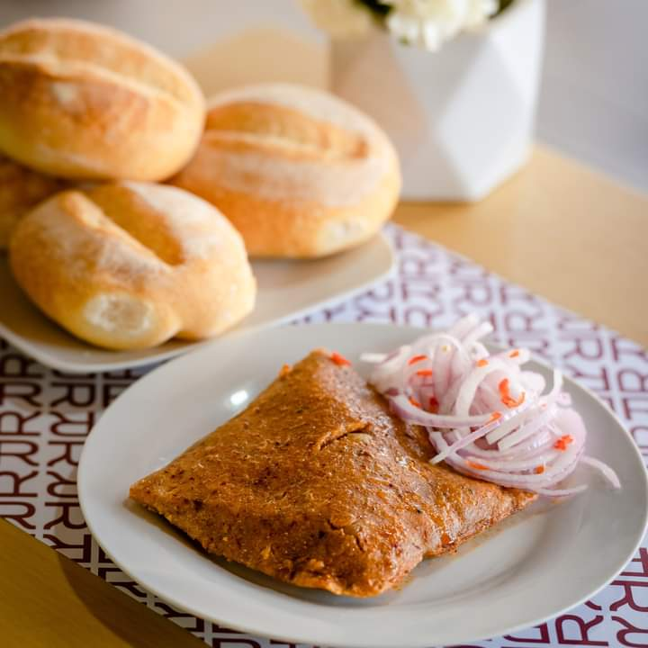

Tamal Chinchano
El tamal chinchano se suele servir acompañado de salsa criolla (cebolla roja en juliana, ají, limón y cilantro) o con rocoto molido. También es común encontrarlo en desayunos o almuerzos, como parte de la gastronomía tradicional de la región de Chincha.